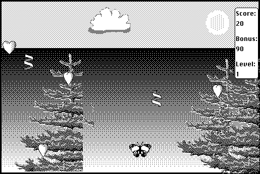

Download
HeartQuest-fat-11.zip (205K) HeartQuest 1.1 repackaged into a zipped hfs disk image and checksum file. The disk image can be mounted with Mini vMac.
HeartQuest-fat-11.cpt.bin (217K) HeartQuest 1.1 in the original format.
copyright: Ingemar Ragnemalm
mod date: Feb 14, 1997
license: freeware
official url :
Ingemar Ragnemalm Games FTP
You "control a butterfly with the mouse, collecting hearts while trying to avoid sticky flypapers."
In Mini vMac, this game requires the more accurate mouse emulation of Full Screen Mode.

If you find these downloads useful, please consider helping the Gryphel Project, which hosts them.
Here are the md5 checksums for the downloads, signed with Gryphel Key 5:
--------- GRY SIGNED TEXT --------- 6433f3cdb36ddecc4f26c72f32037f43 HeartQuest-fat-11.zip 55f370e3628c4026f74de479e34ac3e9 HeartQuest-fat-11.cpt.bin ------- BEGIN GRY SIGNATURE ------- Gry/4Xa8CFcUzxdN/DQavyjvTeYk4HXOiLbf9UoqKTM7NYsk/9JmcX+Mgpq9mWYV RqRjoS/rbMBcG6k0bdU7tvpOrNZk23TZ6MsyFhwV2ePM5au2zwFcHpOA0PMuu2SI 0MBD+bJ+Y6m7TvP79O5jLwB+KmyX0hKXykynUXnOnaffJHmeXOvbnDi7B9Ufn8VB -------- END GRY SIGNATURE --------